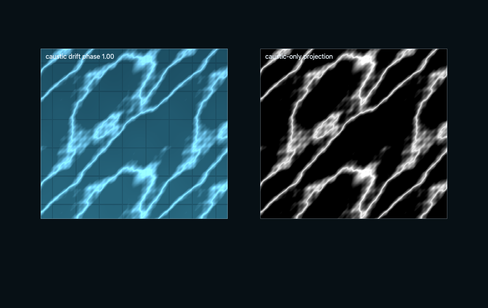

Validation gallery
Evidence frames produced by this skill's validation contract.



Skill Pack / Planning and Validation / Visual Validation
Validate advanced Three.js WebGPU/TSL graphics as authored systems using fixed-view visual contracts, node-pipeline diagnostics, no-post baselines, seed and temporal sweeps, renderer.info and GPU timing evidence, capability manifests, leak loops, and stable JSON+PNG regression bundles.
Validation treats an image as a claim to be falsified. A fixed-view contract pins camera, seed, resolution, and time; comparison is perceptual error against a stored baseline:
$$E = \operatorname{quantile}_{0.99}\big(\Delta E_{pixel}\big) < \tau, \qquad \text{plus } \max_{region} \bar\Delta E < \tau_{region}$$Determinism is tested by seed sweeps ($F(seed_1) \ne F(seed_2)$, but $F(seed_1)$ twice is byte-identical) and temporal pairs ($t_0, t_1$ frames must differ where motion exists, match where it doesn't). Performance claims bind to measurements:
$$\operatorname{median}_{30\,frames}(t_{GPU,pass}) \le b_{pass} \quad\text{for every budgeted pass}$$The no-post baseline isolates cause from grade: every effect must be visible with post-processing off, or the effect is the post. Evidence ships as a stable JSON+PNG bundle — capability manifest, renderer.info counters, per-pass timings — so regressions diff cleanly.
Evidence frames produced by this skill's validation contract.

Shipped inside the skill folder — each is a working WebGPU/TSL scene or harness you can run and screenshot.
The complete SKILL.md as loaded by agents — verbatim, rendered.
Validate the mechanism that creates the image, not a single polished frame.
The only taught path is latest Three.js with WebGPURenderer, TSL,
NodeMaterial materials, RenderPipeline, built-in post nodes, and
compute/storage evidence where the implementation uses GPU simulation.
WebGPURenderer, call await renderer.init(), and record the
actual backend and capability tier for the run.renderer.info,
render-target and storage-resource inventories, and dispose/recreate loops.The validation surface must use:
WebGPURenderer from three/webgpu;three/tsl;MeshStandardNodeMaterial, MeshPhysicalNodeMaterial,
MeshBasicNodeMaterial, SpriteNodeMaterial, or the matching
NodeMaterial family for debug views;RenderPipeline, pass(), mrt(), PassNode.setResolutionScale(),
outputColorTransform, and renderOutput() for post and diagnostic output;GTAONode, BloomNode, TRAANode,
DepthOfFieldNode, CSMShadowNode, TileShadowNode, fog, sky, and related
node outputs;renderer.compute() / renderer.computeAsync() plus TSL
Fn().compute(count), StorageTexture, StorageBufferAttribute,
StorageInstancedBufferAttribute, storage() nodes, textureStore(),
workgroupBarrier, and atomic* evidence when the subject system uses GPU
simulation, culling, compaction, histories, or generated instance data.Use references/graphics-validation-protocol.md for the full contract schema, artifact layout, capability tiers, timing protocol, render-target inventory, color/output rules, mechanism-specific evidence, and rejection criteria.
Every validation run records its actual tier. Compute/storage/MRT validation uses this gate and stays on native WebGPU tiers:
await renderer.init();
const capabilities = {
threeRevision: THREE.REVISION,
renderer: 'WebGPURenderer',
isPrimaryBackend: renderer.backend.isWebGPUBackend === true,
outputColorSpace: renderer.outputColorSpace,
toneMapping: renderer.toneMapping,
samples: renderer.samples,
reversedDepthBuffer: renderer.reversedDepthBuffer,
outputBufferType: renderer.getOutputBufferType(),
compatibilityMode: renderer.backend?.compatibilityMode ?? null,
trackTimestamp: renderer.backend?.trackTimestamp ?? null,
limits: renderer.backend?.device?.limits ?? null,
features: renderer.backend?.device?.features ? [ ...renderer.backend.device.features ] : null,
unavailableReason: renderer.backend?.device ? null : 'renderer.backend.device unavailable'
};
if (renderer.backend.isWebGPUBackend === true) {
qualityTier = 'native-compute';
} else {
throw new Error('WebGPU backend required for canonical visual validation. If the user explicitly asked how to apply fallback when WebGPU is unavailable, route to threejs-compatibility-fallbacks.');
}
Budgeted WebGPU tiers keep the same visual contract but use smaller grids, fewer temporal samples, lower diagnostic resolution, or other named quality settings inside the WebGPU architecture. They are not second implementation recipes.
visual-contract.json binding every invariant to requiredImages,
requiredDiagnostics, requiredMetrics, and blockingFailures; a contract
that requires only images/final.design.png is invalid evidence;evidence-manifest.json with renderer/backend, capabilities, browser/GPU,
camera, seed, time, viewport, DPR, quality tier, assets, color pipeline,
post stack, stochastic masks, thresholds, and known compromises;RenderPipeline output owner, MRT outputs,
built-in effect nodes, resolution scales, and tone/output transform owner;SKIP verdict when GPU timing is unavailable;renderer.info metrics, manual target/storage memory estimates, draw calls,
triangles/points/instances, pass count, dispatch count, and dispose/recreate
leak-loop results.Use examples/webgpu-validation-harness/ as the canonical artifact layout and
schema implementation before adding skill-specific validation. Its budget and
pixel-diff gates are not presence checks: CPU/GPU median frame timings and
target/storage memory are compared to the selected manifest budget profile, and
perViewPixelDiff records decode manifest-named baseline/candidate PNG pairs
and fail when the differing-pixel ratio exceeds the declared threshold.
State explicit budgets before acceptance:
| Target | Desktop discrete | Desktop integrated | Mobile |
|---|---|---|---|
| steady final frame | <= 8 ms GPU | <= 16 ms GPU | <= 24 ms GPU |
| validation capture frame | <= 12 ms GPU | <= 24 ms GPU | <= 33 ms GPU |
| CPU frame orchestration | <= 3 ms | <= 5 ms | <= 8 ms |
| readback/capture overhead | excluded, measured separately | excluded, measured separately | excluded, measured separately |
Also budget pass count, draw calls, dispatches, render-target memory, storage memory, history buffers, screenshot count, seed count, and leak-loop iterations. If a subject skill gives stricter budgets, use the stricter number.
When validating $threejs-procedural-creatures, the standalone creature lab
produces the mechanism metrics and this skill owns their artifact-bundle gates.
Use the creature vocabulary exactly: creature-local SDF field and shell,
world-space planted feet, candidate set versus full field, and display/shadow
snapped-position parity.
| Evidence row | Producing harness | Gate threshold |
|---|---|---|
| SDF snap residual over the locomotion sweep | creature lab snap residual sweep export in the visual-validation bundle |
max abs(d - iso) < 0.02 of body scale after bounded Newton snap |
stance drift, space named world |
creature lab planted-foot telemetry and foot-drift markers | planted foot world delta < 1e-9 per frame for stationary and moving gait |
| candidate-set vs full-field sweep | creature lab candidate-set parity sweep over the same locomotion clocks and tier K |
snapped candidate-set surface remains within the snap residual gate, < 0.02 of body scale, against full-field evaluation |
| silhouette-vs-shadow parity | creature lab fixed-camera silhouette/shadow mask export consumed by the visual-validation PNG/diff gate | same snapped position path: mask IoU >= 0.98 and directed edge distance <= 1 px; any divergent display/depth position node is a blocking failure |
SRGBColorSpace.NoColorSpace or linear data semantics.HalfFloatType until the single tone-map owner.outputColorTransform or an explicit renderOutput() stage.renderer.info and manual byte estimates.This skill evaluates an implementation; it does not supply the subject
mechanism. Load $threejs-choose-skills first, then the subject or image-effect
skill such as $threejs-procedural-planets, $threejs-volumetric-clouds,
$threejs-spectral-ocean, $threejs-water-optics, $threejs-bloom,
$threejs-ambient-contact-shading, $threejs-scalable-real-time-shadows,
$threejs-dynamic-surface-effects, $threejs-procedural-vegetation,
$threejs-procedural-creatures,
$threejs-procedural-geometry, $threejs-procedural-materials,
$threejs-particles-trails-and-effects, or $threejs-black-holes-and-space-effects. Use this
protocol to decide whether the result is acceptable.